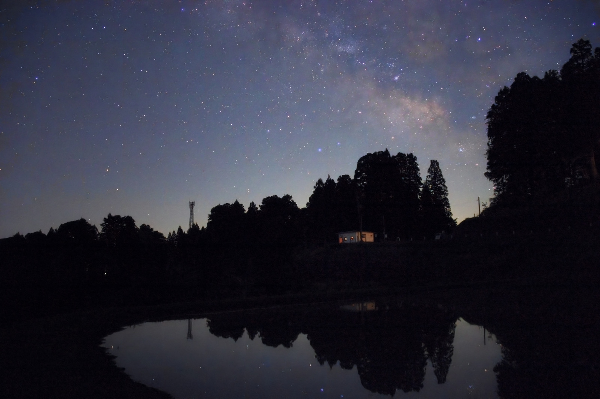
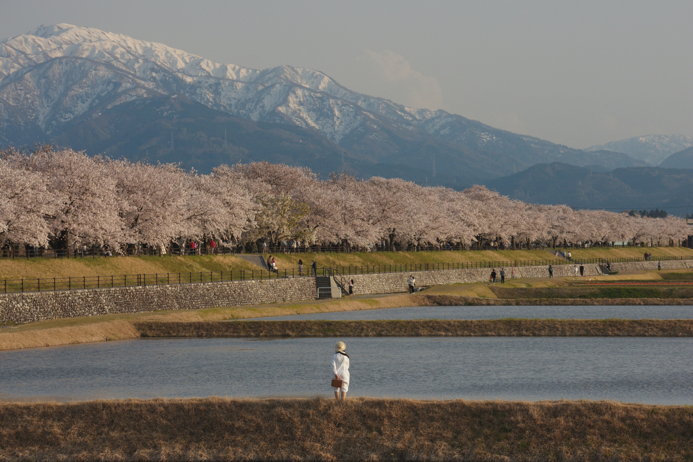
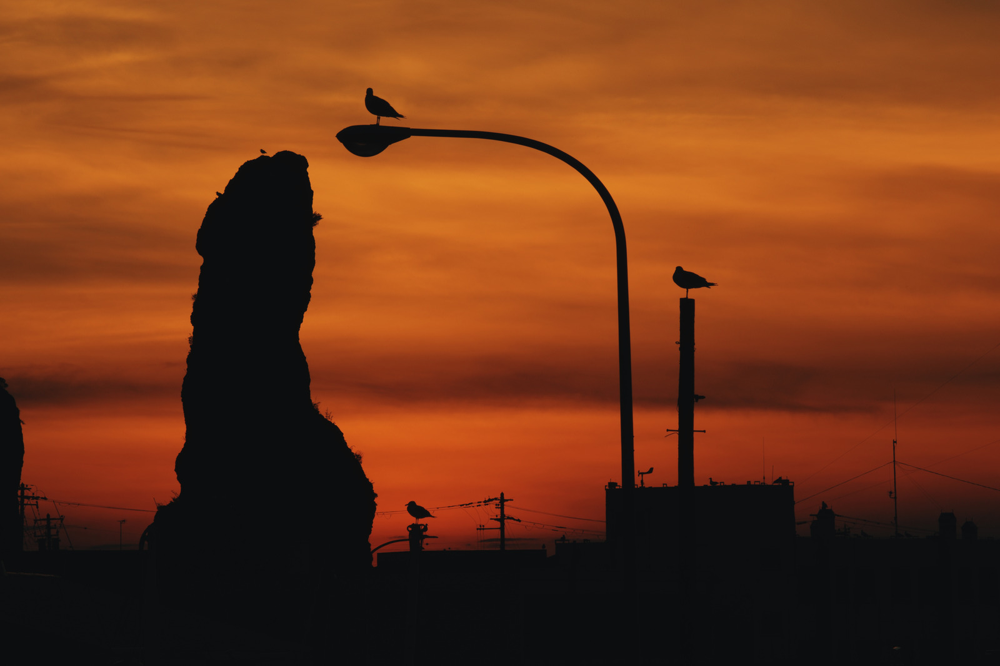
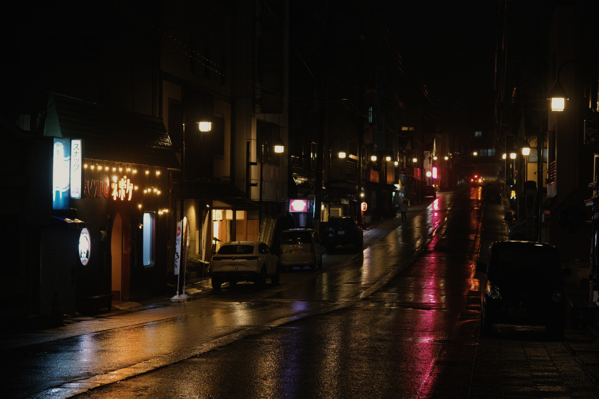

Starlit Ridge
A warm galactic core and clearer dust lanes above a quiet ridge.
After · Open Before · Open After
Tell your agent what you want. It studies photos from your library, helps choose and edit them, and builds presets tailored to you. Review its choices and refine the results together.
Get started with LightweftDrag the divider to compare the unadjusted RAW render with the edit. No sky was generated or replaced.
From a library of more than 80,000 photographs, GPT-6 Astra used targeted Immich searches to choose these two nightscapes and direct their edits in RapidRAW.
Exposure, colour and local light shaped the final images. Denoising cleaned up the sky, with some softening of faint detail. The photographer requested a later lift to the house and its reflection in Woodland Mirror. No sky was generated or replaced.
A warm galactic core and clearer dust lanes above a quiet ridge.
After · Open Before · Open After
After the first edit, I asked for a gentle lift to the house and its reflection.

After · Open Before · Open After
Your AI agent studies your photos, explores editing styles, and creates presets for your library. These four examples came from one photographer’s Canon RAW collection. Compare each base rendering with the same photo plus its custom preset.
The agent reviewed a sample of Canon RAW photos from the photographer’s Immich library, researched film-inspired looks, and tested the presets across different subjects and lighting. Quiet Story, Amber Days, Garden Reverie and After Hours are four results of that process.
The goal is to create a consistent style for your own photos. The agent compares alternative edits and uses your feedback to refine the presets. Exposure and other corrections can still be adjusted for each photograph.
Each comparison here keeps the same base preparation and framing on both sides. Only the saved preset changes. The four example preset files are not included with the Style Builder skill.
A moment by the river. A softer palette gives the blossom-lined river a reflective mood. The pale figure stays distinct against the water, while the distant mountain holds its haze.

Quiet Story · Open Base rendering · Open Quiet Story
Birds above the street. Copper-orange clouds turn the birds and curved streetlamp into a graphic silhouette. The colour is deliberately warmer; the dark forms carry the photograph.

Amber Days · Open Base rendering · Open Amber Days
A clearing in the green. Deeper greens frame the vermilion pagoda and pale waterfall. The forest becomes denser and quieter, with less openness in its shadows.
Garden Reverie · Open Base rendering · Open Garden Reverie
The street after rain. Cooler shade and warm reflections give the wet street a cinematic mood. Darker buildings recede, leaving the lamps and road to guide the eye.

After Hours · Open Base rendering · Open After Hours
Describe a mood or ask for a style that suits your photos. Your agent reviews your library to understand what you shoot and the lighting you encounter.
The agent edits selected photos in your connected editor and creates custom presets to give your collection a consistent style.
Compare before and afters, check details, and tell the agent what to change. It uses your feedback to refine the edits and presets.
Lightweft provides agent guidance and a review workspace. Your agent uses connected tools to access your library and edit photos. These demos use Immich and RapidRAW.
{kind=link}
{kind=link}
{kind=link}
{kind=link}
{kind=link}
{kind=link}
{kind=link}
{kind=link}
{kind=link}
{kind=link}
{kind=link}
{kind=link}